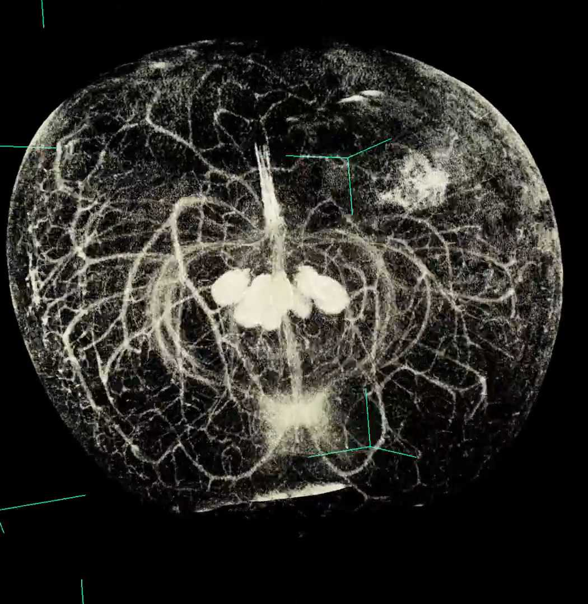
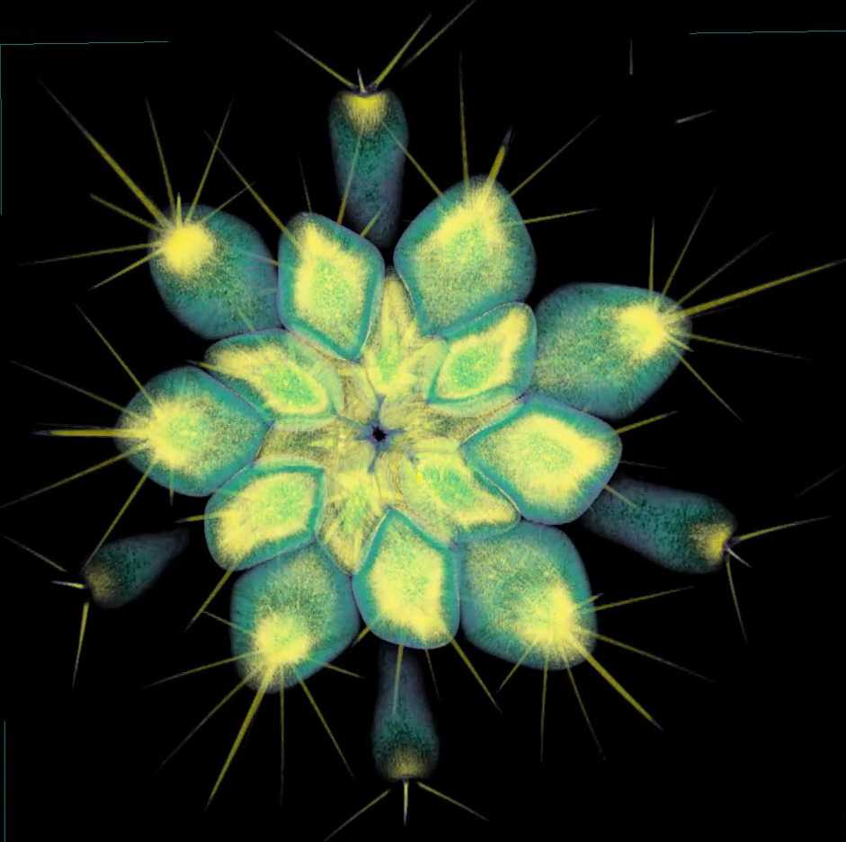
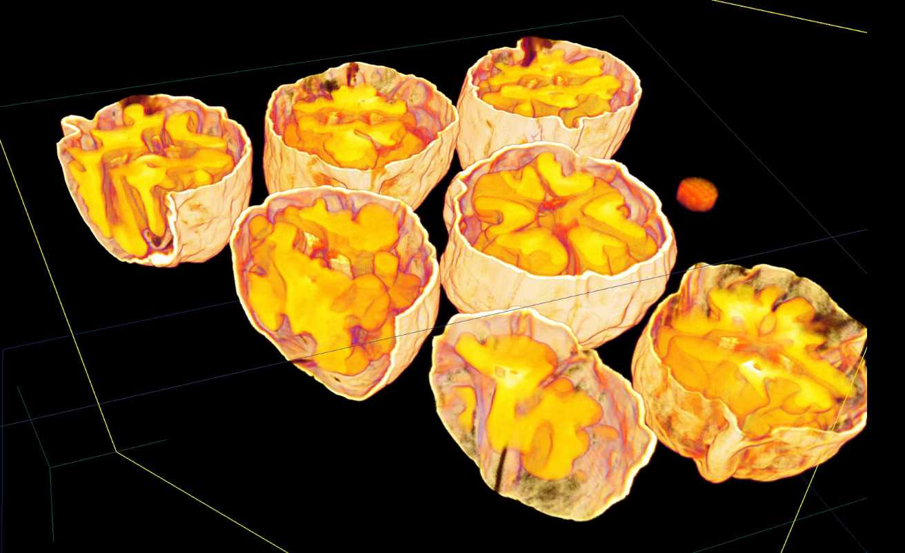

Describing Demeter
Demeter was the Greek goddess of the harvest, agriculture, fertility and religious law. She, as the rest of the Greek deities, was an embodiment of multitasking and multidisciplinarity. In fact, most of the Olympus had to supervise multiple tasks each, as it seems that economic trouble and budget constraints have plagued Greece since ancient, mythological times. Demeter must have had a precise knowledge of yields and cycles of all the different crops, along with fine-grained details on how each variety of cereal reacts to different soils, climates and farming practices. On top of that, she had to supervise and assist the proper following of sacred rules. With such a packed schedule, she needed to identify quickly the important traits of numerous cultivated plants. Perhaps a thorough, informed glance at the shape of each grain and spike revealed to her all the information required to understand the yield and resistance properties of different plant species. Maybe Demeter used mathematics, especially algebraic topology, the mathematical study and description of shape.
Peeling citrus
Citrus work like legos. All the citrus you see out there in the produce section are a combination of just three fundamental lego blocks:
- Pure mandarins (C. reticulata)
- Citrons (C. medica)
- Pummelos (C. maxima)

-
For instance, we can explore the distribution of oil glands across citrus skin. Preliminary results suggest that shape matters: glands seem distribute uniformly across the skin for near-spherical citrus (like oranges and grapefruits), but they are concentrated around the equator for more ellongated fruits (like kumquats and finger limes.)
Publications
- E.J. Amézquita, M.Y. Quigley, T. Ophelders, D. Seymour, E. Munch, D.H. Chitwood (2022) The shape of aroma: measuring and modeling citrus oil gland distribution. Plants, People, Planet. DOI: 10.1002/ppp3.10333
Most recent presentations
NOTE: In 2020, I switched from LaTeX to RMarkdown + xaringan to produce my posters and slides based on HTML. Upside is that I can embed videos and gifs. Downside is that rendering may vary depending on the browser used. My slides should render properly in Firefox and Chromium. I can't make promises on other browsers. Let me know if my material is rendered funny!
- 2022 AMS Spring Central. American Mathematical Society Sectional Meeting. Virtual. March 2022. Slides.
Most recent poster
See note above regarding my produced presentation slides.
- 2022 OSU PSS. The Ohio State University Plant Sciences Sympossium. Online. April 2022. [Animated HTML poster].
Quantification of barley grains, topological data analysis, X-ray CT scan image processing
Morphometrics allows us to compare and describe shapes of leaves and fruits based on homologous landmarks. Nonetheless, the overall architecture of a plant resembles more of a branching structure which current morphometric methods are not sufficiently comprehensive to quantify. These methods fail to compare disparate and diverse shapes, since there may not be identifiable homologous points. My lab proposes thus a new approach: topological data analysis (TDA) to quantify plant morphology. TDA is a relatively new area in mathematics which seeks to model and analyze complex data sets using the mathematical notion of shape. Given a 2D or 3D image and a filter function, TDA is able to produce a topological signature that mathematically encodes the essential features of the image’s shape.

We have (plenty of) 3D voxel-based images in our case. These are all X-ray CT scans which must be preprocessed before doing any actual data analysis. The air first must be normalized, then removed, next the image is pruned appropriately, later segmented, and finally labelled.


Currently I am interested in computing the Euler characteristic transform of individual barley seeds. Personally, I found reading Turner's 2014 paper quite challenging at first. Here are some slides I made with plenty of figures to ease the reading. I tried to record a very gentle introduction to the Euler Characteristic Transform, which can be seen here.
Publications
- E.J. Amézquita, M.Y. Quigley, T. Ophelders, J.B. Landis, D. Koenig, E. Munch, D.H. Chitwood (2021) Measuring hidden phenotype: Quantifying the shape of barley seeds using the Euler Characteristic Transform. in Silico Plants (diab033) DOI: 10.1093/insilicoplants/diab033
- E.J. Amézquita, M.Y. Quigley, T. Ophelders, E. Munch, D.H. Chitwood (2020) The shape of things to come: Topological Data Analysis and biology, from molecules to organisms. Developmental Dynamics 249(7); 816—833. DOI: 10.1002/dvdy.175
Most recent presentations
NOTE: In 2020, I switched from LaTeX to RMarkdown + xaringan to produce my posters and slides based on HTML. Upside is that I can embed videos and gifs. Downside is that rendering may vary depending on the browser used. My slides should render properly in Firefox and Chromium. I can't make promises on other browsers. Let me know if my material is rendered funny!
- JMM 2022. Joint Mathematics Meeting. Virtual. April 2022. Slides
- XVI SEMBIOMAT. Seminario Internacional de Biomatemática. Sociedad Peruana de Matemática Aplicada y Computacional. Virtual. Diciembre 2021. Slides [en español]
Most recent workshop
- 2022 NAPPN Annual Conference. North American Plant Phenotyping Network. Athens, Georgia. February 2022. [Workshop material available here].
Most recent poster
See note above regarding my produced presentation slides.
- 1st AATRN Poster Session. Applied Algebraic Topology Research Network. Virtual. October 2021. [Animated HTML poster]. [Accompanying slides]. [Promotional video].
Previous interests
- Bridging math and archaeology with topological data analysis
Between 1978 and 1982, excavations were made in Templo Mayor, one of the epicenters of Aztec culture. Distributed among several crypts and chambers, 162 masks were found as offerings to Aztec authorities between the 14th and 15th centuries in today's modern Mexico City. These masks pose several questions, as their styles are unusual for the location and timeline. The archaeological community believes that the styles resemble those found across the Mexican state of Guerrero on the Pacific coast. Although Guerrero is roughly 300km away from Templo Mayor, the Aztecs had extensive routes of trade and tribute from coast to coast. What is more surprising is the fact that some the styles represented in the 162 mask collection resemble the styles present in Guerrero 500 or even 1000 years prior to the Templo Mayor offerings in the 14th century.

Credits: Diego Jiménez Badillo
The problem posed by archaeologists is then to determine the number of actually different styles represented in the 162 mask collection and to identify the items accordingly. Such identification would further the knowledge of archaeology in Guerrero and deepen the understanding of the Templo Mayor-Guerrero interactions during the 14th century. Due to the limited amount of artifacts from Guerrero, most of the proposed classifications of these 162 masks rely heavily on subjective perceptions which is reflected in several discrepancies among classifications given in the archaeological community.


Variety of hairstyles and noses found in the masks. Credits: Olmedo Vera and González (1986)
The main goal of my bachelor thesis was to define the morphology of each mask in a more objective manner based on its geometrical and topological invariants. Namely, we attempt to describe the morphology of a mask based on the Euler Characteristic. The idea is based on the Euler Characteristic Graphs (ECGs) which were proposed in the 2014 research paper by Richardson and Werman.

Xray CT scan of scarlet emperor mandarins

Observing apple vasculature

Couple of corn ears

Interior of a corn ear

Agave crossed with Manfreda

A cavernous bell pepper!

Quoting Dan C: "Everytime you see a cactus, you should feel awe."

Spiraling with haworthia

Brains, brains, brains... walnuts